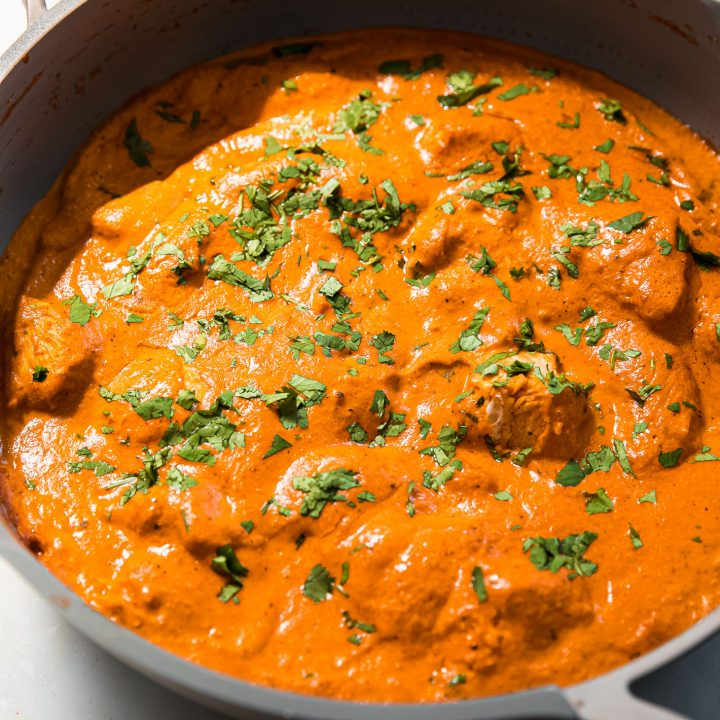

Butter Chicken

Velvety Butter Chicken Bliss
Indulge in Butter Chicken Extravaganza: Creamy, Dreamy, and Oh-So-Buttery Goodness!
Ingredients
- Boneless chicken
- Yogurt
- Butter
- Onion
- Ginger-garlic paste
- Spices (cumin, coriander, garam masala, paprika)
- Tomato puree
- Heavy cream
- Honey/sugar (optional)
- Salt
- Water
Steps
- Let chicken get jiggy with yogurt and spices in a marination dance.
- Sauté onions, garlic, and spice buddies in buttery bliss.
- Add tomato puree and groove until it's smooth and saucy.
- Reunite chicken with its tomato twirl partner in the pan.
- Pour a creamy cream chorus into the mix for extra flair.
- Adjust seasoning and sweeten the deal with honey, if you like.
- Simmer and shimmy until chicken is tender and flavors groove together.
- Garnish with coriander confetti and crunchy nut applause.